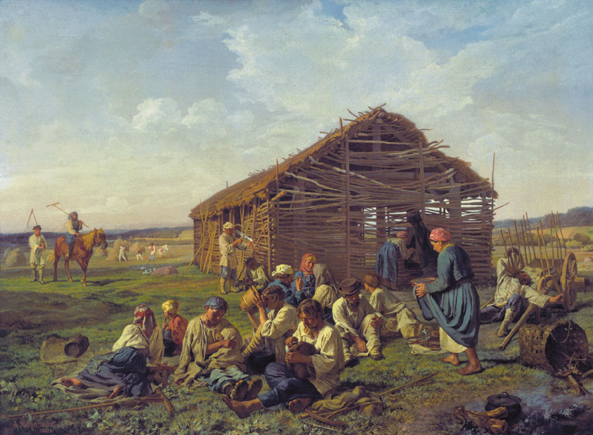

Narod (The People)

The term narod has two principal meanings: it can refer to the common people, the lower classes, or to the people of Russia as a whole (Offord 241–242). The character of the common people and their relationship to Russian society in general are central to Tolstoy’s interest in Anna Karenina.
The concept of narod was understood differently by two main intellectual groups: the Slavophiles and the Westernizers. These two conceptions of the term reveal that, rather than being a historical reality, narod is a concept constructed by the upper classes as a tool to understand themselves. The intellectual group known as the Slavophiles was distinguished by its conception of Russian national distinctiveness. They saw the common people (narod) as the locus of a unique “Russianness,” a national spirit. They idealized peasants, seeing them as selfless, hardworking, moral, religious, peaceful, and apolitical. Furthermore, they believed that the upper classes could only access true Russian identity through contact with the common people. For the Slavophiles, then, narod refers to all of Russia: the common people stand for the nation as a whole (Offord 243–246). On the other hand, the Westernizers, who encouraged Europeanization of Russia, had a less romantic view of the peasant class. This group saw the narod as unenlightened, uncivilized, inchoate, and atheist. They still idealized the peasant class to a certain degree, seeing them as gifted, collectivist, and strong. However, unlike the Slavophiles, this group did not conceive of the common people as the true seat of Russian identity (Offord 246–248). The Populists were a third intellectual group with their own ideas about the true character of the Russian people. The Populists wanted to bring the upper and lower classes closer together to achieve a socialist utopia, bypassing capitalism and liberating the people. Most representatives of this movement supported a positive, idealized view of the narod. They believed that the common people could mobilize a revolution to achieve this goal. However, a few, such as Tkachev, viewed the narod more negatively and believed that the intelligentsia should attempt a political revolution rather than incite the masses to rebel (Offord 252-255). Dostoevsky, a writer of great importance for Tolstoy, inherited the ideas of the Slavophiles. He viewed the narod as purely Russian, and as the source of future Russian salvation. His works demonstrate an idealization of the lower classes and a sense that true Russian identity lies in the peasantry. These ideas are also present in Tolstoy’s work, as in the character of Karataev in War and Peace. Peasant characters and discussions about the nature and role of peasants in society are a major fixture of Anna Karenina. For instance, at the beginning of part three, Sergey Ivanovich and Levin are described as having distinctly different understandings of country life and the peasant class. Sergey Ivanovich sees the country as a rest from work, separate from his everyday life. He professes to love the peasants and know them as a group (Tolstoy 241). Levin, on the other hand, sees the country as a place where real life happens. He doesn’t feel that he knows the peasants: “to say that he knew the peasantry was for him tantamount to saying he knew people” (Tolstoy 242). Levin’s thinking in this instance is reminiscent of the Slavophiles’, as his vision of the peasants sees the narod as the seat of true Russian life and identity. However, Levin’s attitude towards the peasants is more nuanced than that of the Slavophiles, as he is familiar with their shortcomings while respecting and valuing their attitude towards life. Levin’s fascination and affinity with the peasants continue throughout the novel. He feels that there is some kind of higher truth to be found with the peasants. At the end of the novel, for example, the words of an old peasant man catalyze Levin’s spiritual awakening (Tolstoy 798). The peasants teach Levin that the true way to live is to follow instinctive belief, living for God rather than reason. Similarly, his experience mowing with the peasants is transformative, teaching Levin about the value of the peasants’ connection to their land (Tolstoy 256-257). However, Levin also has to visit his sister’s estate because of suspicions that the peasants are being deceitful about their division of the crop (Tolstoy 276). He has trouble with the peasants on his own estate as well, as they require constant supervision to carry out his orders and constantly make deliberate errors, such as mowing the wrong fields. Levin sees these difficulties, however, as being caused by a fundamental conflict of desires — the peasants’ desire for pleasant work and Levin’s desire for profit — and not the result of ill will (Tolstoy 325). His agricultural treatise, which treats the subject of the Russian peasant’s unique attitudes, is an attempt to reach a precise understanding of this attitude towards labor. Levin views the peasants with a deep understanding of their weaknesses, but also with a deep respect for their simple ways and feelings for life. He does not idealize them, but has a sensitive and nuanced view of the common people, which is gained from intimate contact with their manners and ways of life. Overall, especially as Levin can be read as a double of Tolstoy himself, it seems that Tolstoy holds a similar understanding of narod. Tolstoy sees the complex nature of the peasants’ existence. His view of the common people is linked to his commitment to Rousseau’s thinking, as he sees the peasants as being uncorrupted by the influence of civilization (Donskov 183). Tolstoy often portrays the peasants in a positive light, and he views many of their qualities — their instinctive connection with the land, for instance — as central to living a good, healthy, and meaningful life. But he does not, like the Slavophiles, idealize the peasants: as discussed above, Anna Karenina contains many episodes in which the peasants are shown to be flawed people. Rather, Tolstoy admires the simplicity, purity, and communal attitude towards life held by the common people.
Works Cited
- Offord, Derek. "The People." A History of Russian Thought, edited by William Leatherbarrow and Derek Offord, Cambridge University Press, 2010, pp. 241–262.
- Donskov, Andrew. “The Peasant in Tolstoi’s Thought and Writings.” Canadian Slavonic Papers / Revue Canadienne Des Slavistes, vol. 21, no. 2, 1979, pp. 183–96.